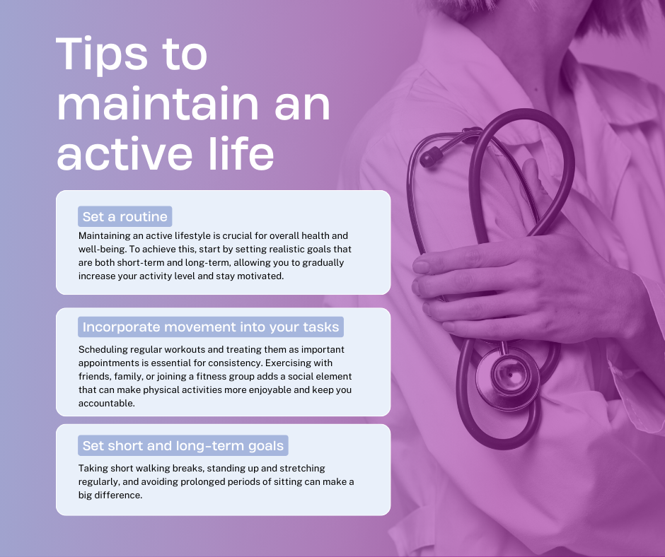

Unlock Your Best Self with Medi-Care: Your Health, Our Priority!

Join Our Community Today and Embrace a Healthier, Happier Life!
Are you ready to take charge of your health and well-being? At
Medi-Care, we're dedicated to helping you achieve your health goals
through personalized care, expert advice, and a supportive community.
Whether you're looking to improve your fitness, manage a chronic
condition, or simply live a healthier life, we're here to guide you
every step of the way.
Our comprehensive health services include:
-
Expert Consultations: Access to top healthcare
professionals who provide tailored advice and treatment plans.
-
Fitness Programs: Customized workout plans to suit
your lifestyle and fitness level.
-
Nutritional Guidance: Diet plans and healthy eating
tips from certified nutritionists.
-
Mental Wellness: Resources and support for stress
management, mindfulness, and mental health.
-
Community Support: Join our vibrant community to
share experiences, get support, and stay motivated.
{{ comment.text }}